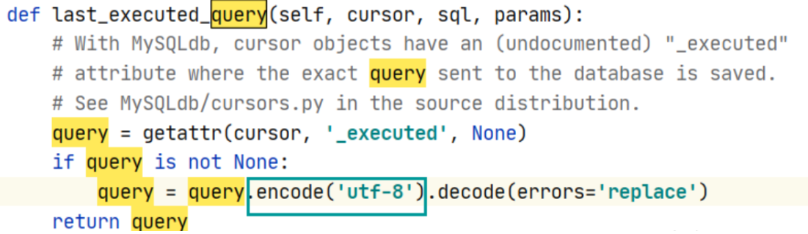

Django迁移数据库表示报错的解决方案
Django迁移数据库表示报错AttributeError: ‘str’ object has no attribute ‘decode’的解决方案：
在D:\anoconda\Lib\site-packages\django\db\backends\mysql的opreations.py文件中，将如下图中的代码中query的解码decode前加上encode(‘utf-8’)即可

具体原因是由于python3.5和python2.7在套接字返回值解码上的差异
python在bytes和str两种类型转换，所需要的函数依次是encode(),将str编码成bytes，以及decode()，将bytes解码成str
本博客所有文章除特别声明外，均采用 CC BY-NC-SA 4.0 许可协议。转载请注明来自 nccoder！